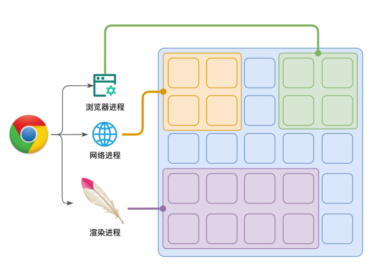
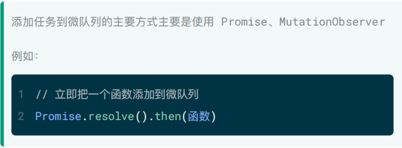
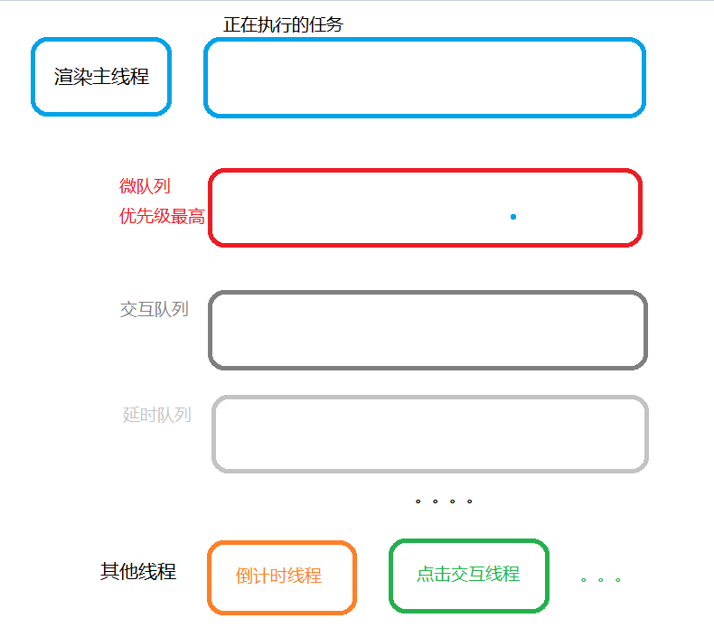

事件循环1-进程与线程
浏览器的进程模型
何为进程？
程序运⾏需要有它⾃⼰专属的内存空间，可以把这块内存空间简单的理解为进程

每个应⽤⾄少有⼀个进程，进程之间相互独⽴，即使要通信，也需要双⽅同意。
何为线程？
有了进程后，就可以运⾏程序的代码了。
运⾏代码的「⼈」称之为「线程」。⼀个进程⾄少有⼀个线程，所以在进程开启后会⾃动创建⼀个线程来运⾏代码，该线程称之为主线程。
如果程序需要同时执⾏多块代码，主线程就会启动更多的线程来执⾏代码，所以⼀个进程中可以包含多个线程。

浏览器有哪些进程和线程？
浏览器是⼀个多进程多线程的应⽤程序
浏览器内部⼯作极其复杂。


为了避免相互影响，为了减少连环崩溃的⼏率，当启动浏览器后，它会⾃动启动多个进程。可以在浏览器的任务管理器中查看当前的所有进程,其中，最主要的进程有：
- 浏览器进程
主要负责界⾯显示、⽤户交互、⼦进程管理等。浏览器进程内部会启动多个
线程处理不同的任务。
- ⽹络进程
负责加载⽹络资源。⽹络进程内部会启动多个线程来处理不同的⽹络任务。
- 渲染进程（前端重点）
渲染进程启动后，会开启⼀个渲染主线程，主线程负责执⾏ HTML、CSS、JS 代码。
默认情况下，浏览器会为每个标签⻚开启⼀个新的渲染进程，以保证不同的标签⻚之间不相互影响。
渲染主线程是如何⼯作的？
渲染主线程是浏览器中最繁忙的线程，需要它处理的任务包括但不限于：
解析 HTML
解析 CSS
计算样式
布局
处理图层
每秒把⻚⾯画 60 次
执⾏全局 JS 代码
执⾏事件处理函数
执⾏计时器的回调函数
……
浏览器渲染进程的工作方式！
1.渲染主线程依次执行消息队列中的任务：

在最开始的时候，渲染主线程会进⼊⼀个⽆限循环
每⼀次循环会检查消息队列中是否有任务存在。如果有，就取出第⼀个任务执⾏，执⾏完⼀个后进⼊下⼀次循环；如果没有，则进⼊休眠状态。
其他所有线程（包括其他进程的线程）可以随时向消息队列添加任务。新任务会加到消息队列的末尾。在添加新任务时，如果主线程是休眠状态，则会将其唤醒以继续循环拿取任务
这样⼀来，就可以让每个任务有条不紊的、持续的进⾏下去了。
整个过程，被称之为事件循环（消息循环）>
2.任务有优先级吗？
答：任务没有优先级，在消息队列中先进先出。但是消息队列有优先级
根据 W3C 的最新解释:
①.每个任务都有⼀个任务类型，同⼀个类型的任务必须在⼀个队列，不同类型的任务可以分属于不同的队列。
②.在⼀次事件循环中，浏览器可以根据实际情况从不同的队列中取出任务执⾏。
③.浏览器必须准备好⼀个微队列，微队列中的任务优先所有其他任务执⾏。

在⽬前 chrome 的实现中，⾄少包含了下⾯的队列：
① 微队列：⽤户存放需要最快执⾏的任务，优先级「最⾼」
② 交互队列：⽤于存放⽤户操作后产⽣的事件处理任务，优先级「⾼」
③ 延时队列：⽤于存放计时器到达后的回调任务，优先级「中」


问：阐述⼀下 JS 的事件循环
答：（事件循环的概念+消息队列的优先级）
① 事件循环⼜叫做消息循环，是浏览器渲染主线程的⼯作⽅式。
② 在 Chrome 的源码中，它开启⼀个不会结束的 for 循环，每次循环从消息队列中取出第⼀个任务执⾏，⽽其他线程只需要在合适的时候将任务加⼊到队列末尾即可。
③ 过去把消息队列简单分为宏队列和微队列，这种说法⽬前已⽆法满⾜复杂的浏览器环境，取⽽代之的是⼀种更加灵活多变的处理⽅式。
④ 根据 W3C 官⽅的解释，每个任务有不同的类型，同类型的任务必须在同⼀个队列，不同的任务可以属于不同的队列。不同任务队列有不同的优先级，在⼀次事件循环中，由浏览器⾃⾏决定取哪⼀个队列的任务。但浏览器必须有⼀个微队列，微队列的任务⼀定具有最⾼的优先级，必须优先调度执⾏。
问：JS 中的计时器能做到精确计时吗？为什么？
答: 不能，原因有：
① 受事件循环的影响，计时器的回调函数只能在主线程空闲时运⾏，因此带来了偏差。
② 计算机硬件没有原⼦钟，⽆法做到精确计时，而是利用操作系统进行计时，操作系统的计时函数本身就有少量偏差，由于 JS 的计时器最终调⽤的是操作系统的函数，也就携带了这些偏差。
③ 按照 W3C 的标准，浏览器实现计时器时，如果嵌套层级超过 5 层，则会带有 4 毫秒的最少时间，这样在计时时间少于 4 毫秒时⼜带来了偏差。